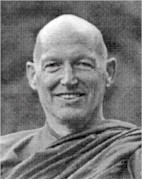
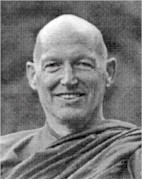

|
Tâm và
Đạo The Mind and The Way Ajahn Sumedho Montreal, Quebec, Canada |
 |
|
BuddhaSasana Home Page |
Vietnamese, with Unicode Times font |
|
|
Tâm và
Đạo The Mind and The Way Ajahn Sumedho Montreal, Quebec, Canada |
 |
|
Chúng tôi thành kính dâng tập sách nầy
đến các vị Ân sư và Thiện trí * Tâm dẫn đầu các pháp
-ooOoo- Ajhan Sumedho Ajahn Sumedho (1) có thế danh là Robert Jackman. Ông sanh năm 1934 tại thành phố Seattle, tiểu bang Washington, Mỹ và lớn lên trong một gia đình đạo Tin Lành cùng với một người chị. Từ năm 1951 đến 1953, ông học tiếng Trung Hoa và sử học tại Đại học Washington. Sau đó ông làm cán bộ y tế cho bộ Hải quân Mỹ. Làm y tế được bốn năm, ông quyết định đi học trở lại và tốt nghiệp bằng cử nhân khoa Đông phương học. Nhờ học về phương Đông, ông được làm quen với Đạo Phật qua sách vở; và bốn năm làm y tế trong Bộ Hải quân Mỹ đã cho ông cơ hội tiếp xúc với Giáo hội Phật giáo Nhật Bản. Sau đó, với tâm nguyện phục vụ con người, ông làm công tác xã hội từ thiện cho Hội hồng thập tự Mỹ. Năm 1961, ông tiếp tục học chương trình cao học về văn hóa các nước Nam Á như Ấn độ, Tích Lan, Miến điện, Thái lan v.v... tại Đại học California ở Berkeley và tốt nghiệp thạc sĩ (Master of Arts) năm 1963. Từ năm 1964 đến 1966, ông là tình nguyện viên của Đoàn Hòa Bình Mỹ (Peace Corps) dạy tiếng Anh ở Sabah thuộc Bắc Borneo. Năm 1966, ông đến Thái Lan, tìm hiểu thêm về đạo Phật, tập tu thiền và sau đó thọ giới sa di tại một ngôi chùa quê hẻo lánh thuộc tỉnh Nong Khai, miền đông bắc Thái Lan. Tháng 5 năm 1967, sa di Sumedho thọ giới tỳ kheo. Từ đó ông Robert Jackman trở thành Đại đức Sumedho. Trong thời gian nầy, sư sống độc cư trong rừng và chủ yếu hành thiền chỉ (2). Dù đã đạt những tầng thiền cao (Jhanas), sư vẫn cảm thấy cần được hướng dẫn thêm để có những tiến bộ thật sự. Nhờ có duyên may gặp ngài Ajahn Chah, một trong những cao tăng nổi tiếng của Thái Lan, sư rời Nong Khai về tu học thiền minh sát (Vipassana) với ngài Ajahn Chah tại tu viện Wat Nong Pah Pong, thuộc tỉnh Ubon trong hơn 10 năm (3). Trong thời gian nầy, từ năm 1967 đến 1977, sư Sumedho tu học tại nhiều tu viện do ngài Ajahn Chah sáng lập và đi hành hương ở Ấn Độ vào cuối năm 1973. Năm 1975, ngài Ajahn Chah thành lập và bổ nhiệm làm sư trụ trì tu viện Wat Bung Wai trong rừng để hướng dẫn các tăng ni và Phật tử phương Tây đến Thái Lan tu tập. Wat Bung Wai được sự ủng hộ nhiệt thành của các Phật tử Thái Lan. Vì thế, sau đó không lâu, Wat Bung Wai dưới sự hướng dẫn của sư trở thành Tu viện Phật giáo quốc tế trong rừng đầu tiên của Thái Lan. Năm 1976, sư Sumedho trở về Mỹ thăm cha mẹ và trên đường đi, sư ghé thăm nước Anh và được mời đến ở một tu viện Phật giáo ở Hamstead, Luân Đôn. Năm sau, nhận lời mời của các Phật tử Anh, sư trở lại Anh và đã ở lại đó giúp truyền bá giáo pháp cho đến ngày nay. Với công phu cần mẫn và tâm đạo nhiệt thành, sư đã giúp thành lập hai tu viện Phật giáo lớn ở Anh. Đó là tu viện Cittaviveka tại Chithurst, West Sussex và tu viện Amaravati ở Great Gaddensden, Hertfordshire. Hiện nay, sư Sumedho là viện chủ tu viện Amaravati và là vị sư hướng dẫn của hơn 100 tu viện và hàng trăm tăng ni thuộc hệ phái Phật giáo nguyên thủy tại Anh, Tân Tây Lan, Thụy Sĩ, Ý và Mỹ. Ông Jack Kornfield, một học giả Phật giáo người Mỹ, thiền sư, và cũng đã từng là bạn đồng tu với sư cho rằng ở phương Tây, Ajahn Sumedho là vị viện chủ Phật giáo nguyên thủy có uy tín và thành công nhất và là người đã đặt nền tảng cho sự phát triển của Giáo hội Phật giáo nguyên thủy phương Tây (4). * Lời người dịch Con đem hết lòng
thành kính đảnh lễ Đức Thế Tôn, Năm 1995, nhà xuất bản Phật giáo Wisdom Publications ở Boston, Mỹ yêu cầu Giáo hội Phật giáo Nguyên thủy Anh phổ biến những bài viết của Đại đức Sumehdo về quan điểm và cách tiếp cận của đạo Phật về những vấn đề của con người hiện đại. Mục đích là giúp các Phật tử Mỹ tu tập tốt hơn và người dân phương Tây có dịp làm quen với đạo Phật -- một tôn giáo có mặt ở Á châu từ hơn hai ngàn năm nay, được du nhập vào phương Tây từ thế kỷ thứ 19 và ngày càng phát triển, nhất là ở Bắc Mỹ. Tu viện Cittaviveka ở Chithurst, West Sussex, Anh quốc cử Đại đức Sucitto và một số tăng ni làm công việc tập họp và biên tập lại những bài viết của Đại đức Sumedho theo những đề tài đã được yêu cầu. Theo lời của Đại đức Sucitto, ban biên tập nhận thấy nếu chỉ trình bày quan điểm Phật giáo về những vần đề của xã hội hiện đại thì sẽ không đủ. Đọc giả cần được trang bị thêm với những kiến thức cơ bản về giáo lý và phương pháp tu tập trong đạo Phật hầu có thể tiếp thu và hiểu rỏ hơn những quan điểm của đạo Phật về những vấn đề của xã hội hiện đại. Vì thế, ban biên tập thêm hai phần quan trọng, đó là những vấn đề giáo lý cơ bản và phương pháp hành thiền của Phật giáo nguyên thủy. (5) Tập sách nầy gồm 20 bài Pháp do Đại đức Sumedho giảng cho các Phật tử tại Anh và được chia làm 3 phần. Phần I gồm 7 bài về Pháp học hay những giáo lý cơ bản của đạo Phật như Tứ Điệu Đế, Tam Bảo, Nghiệp và Tái Sinh, Niết Bàn v.v.. Phần II gồm 6 bài về Pháp hành hay những pháp thanh lọc tâm như Quán hơi thở, Ghi nhận không gian, Sống trong hiện tại v.v... Phần III gồm 7 bài về cách tiếp cận của đạo Phật với những vấn đề hiện đại như Tự do, Gia đình, Giáo dục, Sự sống và sự chết, Xã hội toàn hảo, Tương lai của con người v.v... Vì thế, Tâm và Đạo không phải là một quyển sách hoàn chỉnh và hệ thống về giáo lý đạo Phật hay phương pháp hành thiền. Nó cũng không đề cập hết tất cả những vấn đề của con người hiện đại. Nó không phải là một tập sách nghiên cứu hay học thuật. Như tựa quyển sách có ghi rõ, nó chỉ là những quán tưởng về cuộc sống của Đại đức Sumedho, một nhà sư người Mỹ đã tu theo Phật giáo nguyên thủy hơn 30 năm tại các miền rừng núi xa xôi và hẻo lánh ở Thái Lan và Anh quốc. Tập sách có một sức sống và sức mạnh kỳ lạ làm thức tỉnh con người. Nằm ẩn phía sau những quán tưởng về cuộc sống hình như rất bình thường, nhẹ nhàng và tản mạn nầy là năng lượng từ bi bao la và cái nhìn trí tuệ xuyên thấu của Đại đức Sumedho. Trong phần giới thiệu nầy, chúng tôi sẽ không nói nhiều về chất lượng từ bi và trí tuệ của tác phẩm để quý đọc giả có thể tự mình tiếp nhận hương vị pháp bảo tỏa ra từ tác phẩm. Chúng tôi chỉ muốn giới thiệu ngắn về pháp môn mà Đại đức Sumedho tu học với ngài Ajhan Chah vì pháp môn có ảnh hưởng rất lớn trên con đường phát triển tâm linh và cái nhìn của tác giả về cuộc đời. Ngài Ajahn Chah là một trong những vị sư hiếm có và nổi tiếng trong thế giới Phật giáo nguyên thủy. Ngài và các đệ tử của ngài tu theo hạnh đầu đà (Dhutanga), còn được gọi là tu khổ hạnh, ở những nơi hẻo lánh cách xa dân chúng địa phương. Họ sống trong những cái "cốc" hay những cái chòi nhỏ làm bằng tre nứa đơn sơ, rải rác chung quanh ngôi chùa. Thỉnh thoảng, các nhà sư tu theo hạnh đầu đà có thể rời cốc, đi lang thang trong rừng, sống dưới những gốc cây, với muỗi mòng, rắn rít, thú rừng, gió mưa và nóng bức nhiệt đới. Từ tờ mờ sáng, họ phải đi vào làng cách xa từ 10 đến 15 cây số để khất thực. Ai cho gì ăn nấy. Có khi đó chỉ là một nắm xôi với chút muối ớt. Có khi không có gì hết. Đến mười giờ họ phải trở về cốc để thọ thực và ăn xong trước 12 giờ trưa. Từ 12 giờ trưa cho đến sáng ngày hôm sau, họ chỉ được uống nước chứ không ăn gì hết. Không than phiền. Mục đích chính của cuộc sống khổ hạnh là tập kiên nhẫn và chịu đựng để tồn tại trong bất cứ hoàn cảnh nào. Trong hoàn cảnh tu tập như thế, chư tăng không thể học và nghiên cứu kinh điển nhiều. Trái lại, họ tập trung hành thiền và gìn giữ giới luật -- những giới luật được thiết lập từ thời Đức Phật. Có hơn 227 giới chính và hàng ngàn giới phụ mà các vị tỳ kheo phải giữ từ cách mặc y, rửa bát, đến quan hệ với thầy tổ, các bạn đồng tu, thiện tín, và môi trường thiên nhiên... Cuộc sống khổ hạnh như thế là môi trường tốt nhất cho những tâm bất thiện như dễ duôi, phóng dật, hoài nghi, trạo cử, sân hận, cô đơn, sợ hãi, tham ái, thích hưởng thụ, ngã mạn, ganh tỵ, không kiên nhẫn, than phiền v.v... ồ ạt và liên tục sinh khởi trong tâm. Và trong hòan cảnh đó, người tu không có cách nào khác hơn là nhìn thẳng vào những tâm bất thiện nầy và tập buông bỏ -- nghĩa là để cho chúng xảy diễn trong thân và tâm và ra đi một cách tự nhiên; không can thiệp, không sân hận cũng không dính mắc. Đó là cách tu tập giải thoát của những người tu Phật. Ngài Ajahn Chah dạy: "Hãy làm tất cả với tâm buông bỏ. Đừng mong cầu được khen hay sở hữu gì cả. Nếu buông bỏ một chút, chúng ta sẽ được an vui một chút; Nếu buông bỏ nhiều, chúng ta sẽ được an vui nhiều; Nếu buông bỏ hoàn toàn, chúng ta sẽ được an vui hoàn toàn." (6) Khi những tâm bất thiện ra đi, trong tâm sẽ chỉ còn lại những tâm thiện. Vì thế, chúng ta thấy nhiều tu sĩ sống khổ hạnh mà vẫn tươi cười và hoan hỷ, thành thật, đơn giản, dễ chịu, mát mẻ, không buông lung, không lượm thượm, trí tuệ sâu sắc, lễ phép, từ bi, an lạc, và nhất là thích khôi hài và vui tính. Đó là thể hiện của những tâm thiện qua thân và tâm của các vị ấy. Ngài Ajahn Chah và Ajahn Sumedho là như thế. Vì thế, khi đọc những quán tưởng về cuộc sống của sư Sumedho, bạn sẽ cảm nhận được những tiếng cười hồn nhiên, năng lượng từ bi ấm áp, tinh thần tự do thật sự, sự chân thật mà ông Jack Kornfield, một học giả Phật tử người Mỹ gọi là sự chân thật "đáng sợ" (terrible) và nhất là cái trí tuệ trong sáng, sắc bén và "không khoan nhượng." (uncompromising) (7) Nếu chữ "tu" được hiểu đơn giản là "sửa" thì trong quá trình dịch tác phẩm của Ajahn Sumedho, những quán tưởng của sư đã giúp chúng tôi "sửa" mình rất nhiều. Cái nhìn trí tuệ của sư về những điều hết sức đơn giản trong cuộc sống như nghe một bản nhạc, nhìn một tấm quảng cáo, uống một ly nước, ngắm một đóa hoa, trò chuyện với bạn bè v.v... đã làm chúng tôi giật mình tỉnh thức: "À, thế mà từ bấy lâu nay, mình cứ làm như vậy, nghĩ như vậy... Mình đã không thấy và không hiểu..." Từ đó, chúng tôi "sửa" cách nhìn và cách sống của mình. Xuyên suốt những bài pháp, Ajahn Sumedho luôn nhắc chúng ta chánh niệm, tỉnh giác và khẳng định đây là con đường duy nhất giúp chúng ta đi đến giải thoát. Sư nói ở đâu và bất cứ lúc nào, chúng ta cũng có thể chánh niệm nếu chúng ta nhớ đến nó và sử dụng nó. Những lời sư dạy nhắc chúng tôi nhớ lại những lời dạy của Đức Phật trong Kinh Đại Niệm Xứ (Sati Patthana Sutta): "Đây là con đường duy nhất để thanh lọc tâm chúng sanh, chấm dứt lo âu phiền muộn, uất ức than khóc, diệt khổ thân và khổ tâm, đạt Thánh Đạo và Giác Ngộ Niết Bàn. Đó là Tứ Niệm Xứ. (...) Nầy các thầy tỳ khưu, ở đây, tỳ khưu quát sát thân trong thân, tinh cần, tỉnh giác và chánh niệm để loại bỏ mọi tham ái và ưu phiền sân hận trong cõi đời (...). (8) Về hình thức, đây là những bài giảng pháp nên văn của tập sách là văn nói, không phải văn viết. Khi biên tập những bài giảng nầy, sư Sucitto có ý muốn giữ nguyên văn nói bằng tiếng Anh để đọc giả có thể vừa "thấy" và "nghe" được pháp của sư Sumedho (9). Khi dịch từ tiếng Anh sang tiếng Việt, chúng tôi tôn trọng nguyên tắc giữ đúng nội dung và nguyên văn nói của tác giả. Tuy nhiên vì có những phần văn nói, mà nếu dịch nguyên văn sang tiếng Việt, sẽ không thích hợp, nên chúng tôi mạn phép điều chỉnh phần nào phong cách diễn tả của tác giả để đọc giả Việt Nam có thể tiếp thu dễ và hiểu rõ hơn. Vì trình độ hiểu Pháp của chúng tôi còn thấp và khả năng dịch thuật còn nhiều giới hạn nên tập sách dịch nầy chắc chắn có nhiều khuyết điểm. Chúng tôi xin chân thành sám hối trước Tam Bảo và kính mong quý đọc giả tha thứ về những sai sót và khuyết điểm trong tập sách nầy. Nguyện cầu cho tất cả chúng sanh được an vui hạnh phúc. Susanta Nguyễn Ghi chú: (1) Ajahn là phiên âm từ tiếng Pali Thái "Acariya" nghĩa là vị thầy hay người hướng dẫn. Ở các tu viện Thái lan, Ajahn cũng có nghĩa là người có đức độ lớn. Ajahn có thể dịch sang tiếng Việt là Đại đức.(2) Thiền chỉ (Samatha) còn được gọi là thiền vắng lặng. Đó là hành thiền theo 40 đề mục nhằm mục đích đạt được tâm vắng lặng và bình an do chế ngự được một số phiền não và chướng ngại.(3) Thiền minh sát (Vipassana) nguyên nghĩa là "Thấy bằng nhiều cách". Đó là năng lực quán sát đối tượng thân tâm qua ánh sáng của vô thường, khổ não và vô ngã.(4) Ajahn Sumedho, Teachings of a Buddhist Monk, Buddhist Publishing Group, Ashprington, U.K. 2000. tr. 17(5) Ajahn Sumedho, The Mind and The Way, Wisdom Publications, Boston. 1995. Phần giới thiệu của Ban biên tập. tr. xv(6) Ajahn Sumedho. Sách đã dẫn. tr. xix(7) Ajahn Sumedho, Teachings of a Buddhist Monk. tr.17(8) Sayadaw U Silananda. Kinh Đại Niệm Xứ. Tỳ kheo Khánh Hỷ dịch, Như Lai Thiền viện, San Jose. 1999. tr. 271-272. Những chữ nhấn mạnh là của người dịch.(9) Ajahn Sumedho. The Mind and The Way. Phần giới thiệu của Ban biên tập. tr. xxii-ooOoo- |
Chân thành cám ơn đạo hữu Susanta đã gửi tặng bản vi tính (Bình Anson, 05-2006)
[Trở
về trang Thư Mục]
last updated: 30-05-2006